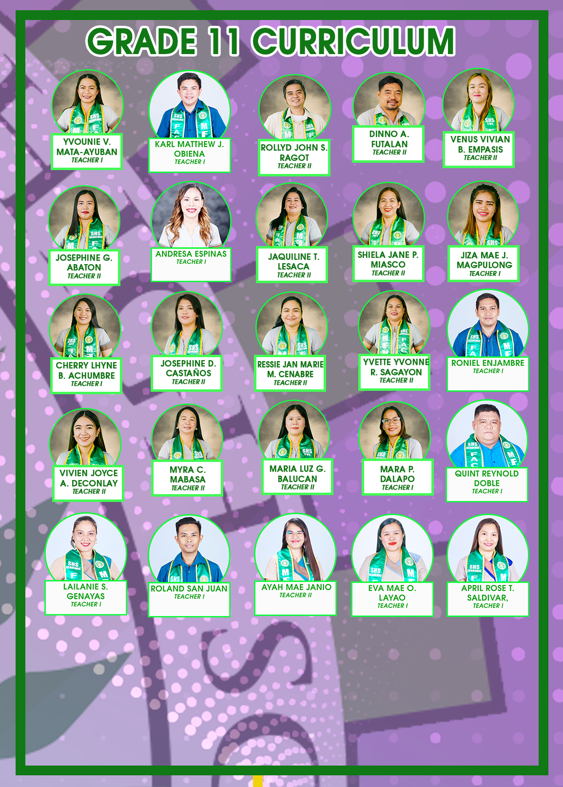
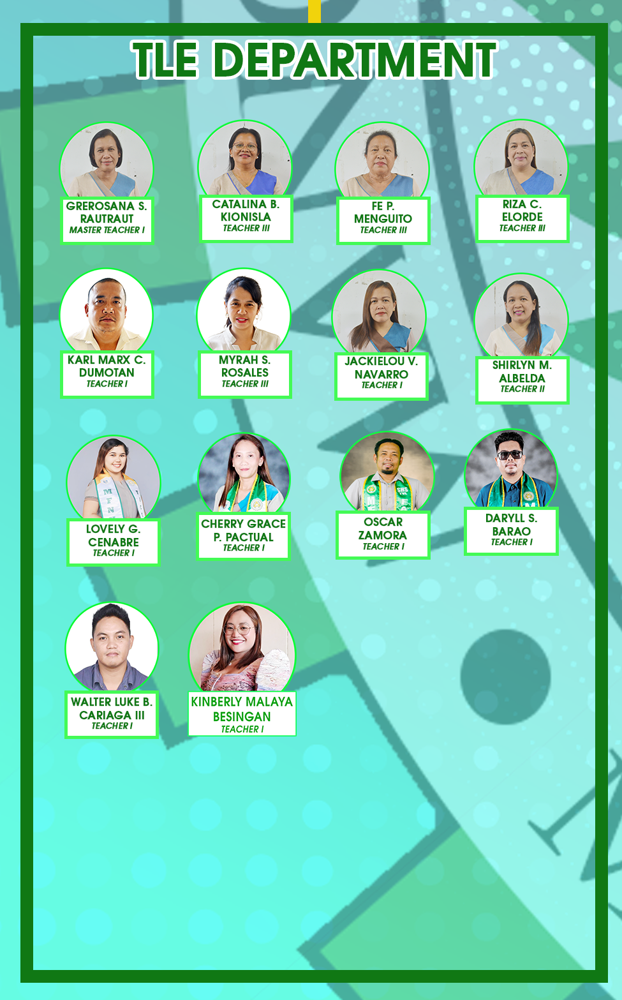
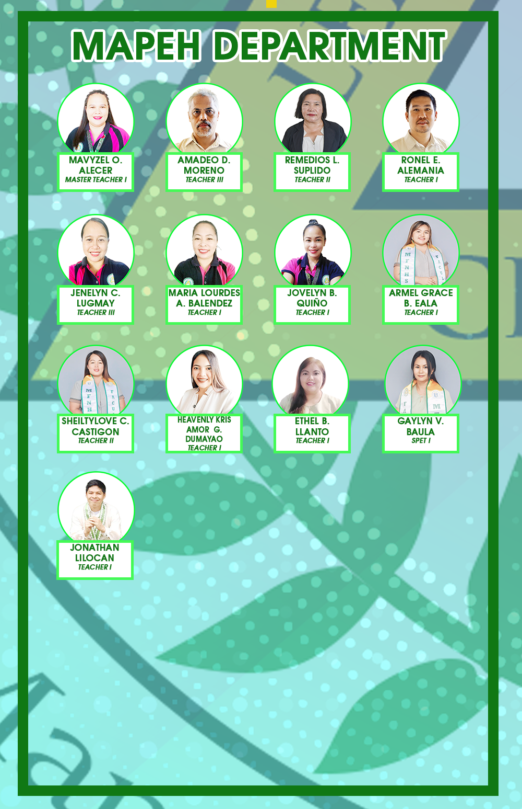
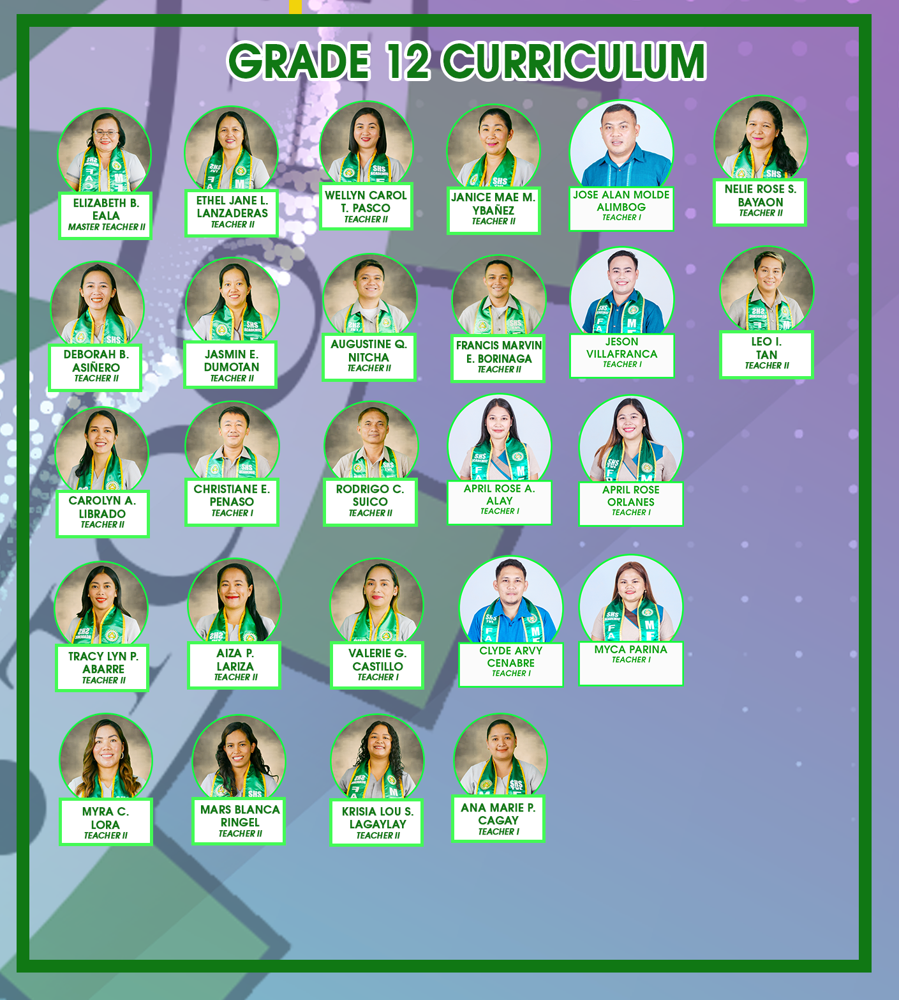

Guiding the Future with Wisdom and Experience
Our School Community Experts are passionate mentors, educators, and field specialists who guide students in the development of their research projects. They serve as research advisers, content reviewers, and ethical stewards of the MFNHS Research Center.
.png)
Master Teachers and Subject Coordinators:
Providing direction in research formulation, relevance, and academic alignment.
.png)
ICT and STEM Advocates:
Ensuring that digital tools and technologies are properly integrated in student innovations.
.png)
Indigenous Knowledge Partners:
Encouraging cultural sensitivity and promoting local wisdom in research practices.
.png)
Community-Based Experts:
Professionals from the LGU, NGOs, and partner industries who contribute practical insights and real-world context.
.png)
Role and Impact:
Validate student research quality and integrity. Inspire innovation aligned with community need. Promote collaboration between school and barangay. Uphold the mission of education for sustainable development.
.png)